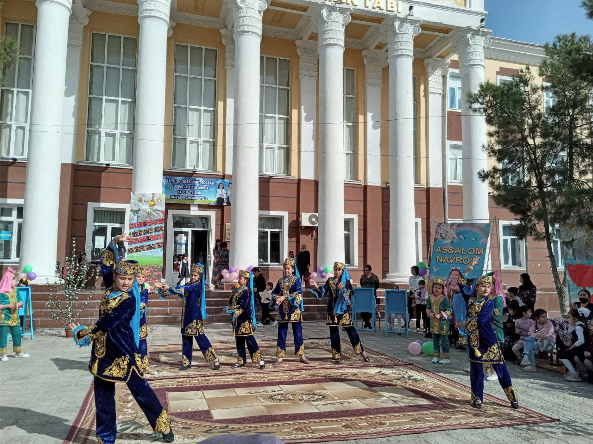

Islom Fayzullaev


 Xususiyat tarkibni joylashtirish va formatlash uchun ishlatiladi, masalan, rasm konteynerdagi matnning chap tomoniga qo'yishga imkon beradi. Xususiyat tarkibni joylashtirish va formatlash uchun ishlatiladi, masalan, rasm konteynerdagi matnning chap tomoniga qo'yishga imkon beradi. Xususiyat tarkibni joylashtirish va formatlash uchun ishlatiladi, masalan, rasm konteynerdagi matnning chap tomoniga qo'yishga imkon beradi. Xususiyat tarkibni joylashtirish va formatlash uchun ishlatiladi, masalan, rasm konteynerdagi matnning chap tomoniga qo'yishga imkon beradi.
Border-box xususiyatini o'rganamiz
Border-box xususiyatini o'rganamiz
Border-box xususiyatini o'rganamiz